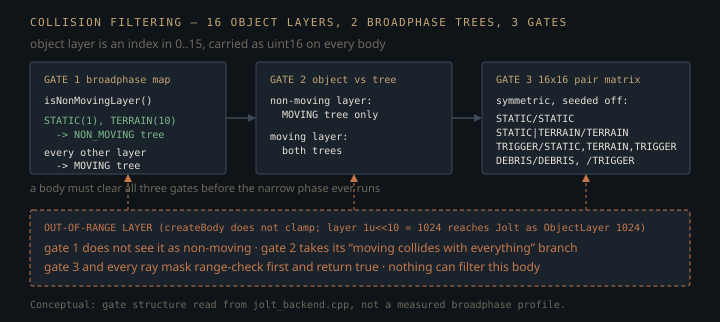

Monograph · Tree · ← Module hub · Backend plugin
physics
Backend plugin
IPhysicsBackend, factory, null fallback, Jolt.
Two safety nets, because there are two ways to die
The interface header states the ambition in one line: physics is a service the engine can lose without losing the frame.
* Design: Microservice pattern - if the backend fails, the engine still runs.ohao/physics/backend/physics_backend.hpp:6There are two independent nets, and they are wildly different sizes. The factory wraps construction in `try`/`catch` for both `std::exception` and `...`, returning the null backend on either — but the constructor it guards does nothing at all:
JoltPhysicsBackend::JoltPhysicsBackend() = default;ohao/physics/backend/jolt/jolt_backend.cpp:281so the only failure that net can realistically see is a `bad_alloc` from `std::make_unique`.
return std::make_unique<NullPhysicsBackend>();ohao/physics/backend/backend_factory.cpp:37Everything that can actually fail sits behind the second net, inside `initialize()`: Jolt's global type registry first — `RegisterDefaultAllocator`, the `Factory` singleton, `RegisterTypes` — then a 10 MB temp allocator, a job thread pool, and `PhysicsSystem::Init` sized from `maxBodies`.
ensureJoltGlobalInit();ohao/physics/backend/jolt/jolt_backend.cpp:295`initialize()` catches around all of that, logs, calls `shutdown()`, and returns false. `PhysicsWorld` is what acts on the false: it discards the backend it was handed and builds a null one itself.
m_backend = std::make_unique<backend::NullPhysicsBackend>();ohao/physics/world/physics_world.cpp:64The honest cost is that `NullPhysicsBackend` is not inert. It hands out monotonically increasing handles that its own `isValidBody` accepts, and reports every body's position as the origin.
[[nodiscard]] BodyHandle createBody(const BodyCreationInfo&) override { return m_nextHandle++; }ohao/physics/backend/physics_backend.hpp:478A caller that writes backend transforms back onto its actors therefore does not get a frozen scene — it gets every rigid body snapped to the origin. The process survives; the scene does not.
What is allowed to cross the boundary
Nothing Jolt-shaped. Handles are `uint32_t`, geometry is glm, shapes are a plain `ShapeInfo` holding borrowed pointers. The whole translation layer is one header of inline conversions, and its most load-bearing line reorders four members:
return JPH::Quat(q.x, q.y, q.z, q.w);ohao/physics/backend/jolt/jolt_helpers.hpp:29glm's quaternion constructor takes `(w,x,y,z)` while its storage order is `{x,y,z,w}`; Jolt's constructor takes `(x,y,z,w)`. Copying constructor arguments straight across yields a perfectly valid unit quaternion that is simply the wrong rotation — no assert, no NaN, just bodies at strange angles. Both directions are written member-by-member for that reason.
One conversion is conditionally compiled, which reads as dead code until you know why:
#ifdef JPH_DOUBLE_PRECISIONohao/physics/backend/jolt/jolt_helpers.hpp:42In a single-precision build Jolt typedefs `RVec3` to `Vec3`, so an unconditional `toGLM(const JPH::RVec3&)` would redefine the overload above it. The guard is about the overload set collapsing, not about precision.
Sixteen object layers, two broadphase trees
Filtering happens three times before the narrow phase, at very different prices. Jolt keeps one broadphase tree per *broadphase* layer and every query walks every tree, so the backend folds its 16 object layers down to two. Exactly two indices land on the non-moving side:
return layer == CollisionLayer::STATIC || layer == CollisionLayer::TERRAIN;ohao/physics/backend/jolt/jolt_backend.cpp:71The rejected alternative is one broadphase layer per object layer — 16 quadtrees, each rebuilt and traversed independently. Broadphase layers are expensive and object layers nearly free, so the engine buys 16-way filtering at narrow-phase granularity while paying for two trees. The cost: motion type and layer are no longer coupled. A body created `STATIC` but given an explicit layer of, say, `DEBRIS` lands in the *moving* tree — the one Jolt keeps rebuilding — with no warning. Auto-assignment only runs when the caller leaves `layer` at zero.
The same predicate then runs a second time as a tree-level gate. `ObjectVsBroadPhaseLayerFilterImpl` lets a non-moving body descend only into the MOVING tree; every other layer is admitted to both:
// Non-moving only collides with moving broadphaseohao/physics/backend/jolt/jolt_backend.cpp:114The third gate is a symmetric 16×16 matrix, pre-seeded off for eight pairs: STATIC/STATIC, STATIC/TERRAIN, TERRAIN/TERRAIN, TRIGGER against STATIC and TERRAIN, TRIGGER/TRIGGER, DEBRIS/DEBRIS, and DEBRIS/TRIGGER. Seven of those are pure solver cost. The last is not — making debris invisible to trigger volumes is a gameplay decision, taken in a constructor, with nothing in the interface that says so.
setCollision(CollisionLayer::DEBRIS, CollisionLayer::TRIGGER, false);ohao/physics/backend/jolt/jolt_backend.cpp:148The same uint16 is an index here and a bitmask there
`BodyCreationInfo::layer` is a layer *index*. The `layerMask` argument on every raycast and overlap query is a *bitfield* over those indices, tested with a shift:
return (m_mask & (1 << inLayer)) != 0;ohao/physics/backend/jolt/jolt_backend.cpp:174Same type, same `CollisionLayer::` constants, opposite encodings — and only one path validates: `setBodyLayer` rejects an out-of-range layer, `createBody` casts it straight to `JPH::ObjectLayer`. The tree already contains one site that mixed them up, building a mask where an index is required:
info.layer = static_cast<uint16_t>(1u << 10); // LAYER_TERRAIN = 10ohao/physics/world/physics_world.cpp:937That body reaches Jolt as `ObjectLayer(1024)`, and every consequence is silent. `isNonMovingLayer(1024)` is false, so static terrain goes into the moving tree — and for the same reason the object-vs-broadphase gate takes its "moving collides with everything" branch. The pair matrix and the ray mask both bail out before indexing and return `true` for anything out of range, so terrain collides with everything the matrix exists to exclude, and no raycast mask can filter it out.
return true; // Fallback: unknown layers collideohao/physics/backend/jolt/jolt_backend.cpp:153
Contacts cross a thread boundary; the statistics do not
Jolt calls `ContactListener` from its job threads, mid-`Update`. The backend refuses to pass that concurrency outward: every callback flattens the manifold into a POD `ContactEvent` and pushes it onto a mutex-guarded vector.
void JoltPhysicsBackend::pushContactEvent(const ContactEvent& event) {ohao/physics/backend/jolt/jolt_backend.cpp:608The queue drains inside `step()`, after `Update()` has returned, so the user's `IContactListener` runs on the calling thread with the physics system quiescent: same tick, no lock discipline demanded of the caller, safe to mutate bodies from a contact callback.
The sharp edge is when nobody is listening. `step()` only drains the queue if a listener is installed, and `PERSIST` fires once per contact pair per tick — a crate resting on the floor emits an event every step, forever. With no listener and no one polling `getContactEvents()`, the vector grows without bound. `getStats()` then reads its size with the lock deliberately not taken:
// Don't lock in const method; just report approximate countohao/physics/backend/jolt/jolt_backend.cpp:1462That is a documented gap in the class's own locking discipline, not an observed race in this tree. Jolt's job threads reach `pushContactEvent` only from inside `PhysicsSystem::Update`, which `step()` calls synchronously and which does not return until its jobs retire, and the only callers of the backend's `getStats()` anywhere in the tree are two single-threaded test cases. The hazard is in the contract, not in an observed race: a caller polling stats from another thread while `step()` runs gets an unsynchronized read of a `std::vector`'s size, and nothing in the header tells it not to.
Breaking a joint is measured in impulse, not force
Constraint breaking is not a Jolt feature; the backend polls for it after each update, reading the accumulated Lagrange multiplier out of each constraint and erasing the constraint from both the map and the physics system when the threshold is crossed. Those multipliers are impulses, and the interface header says so:
// Breaking thresholds: impulse (N·s) per step; 0 = disabledohao/physics/backend/physics_backend.hpp:445$\lambda$ is what `GetTotalLambdaPosition().Length()` returns — the impulse in N·s the solver applied along the constraint over one step; $F$ is the sustained force the joint carries; $\Delta t$ is the step. `PhysicsWorld` drives the backend on a hardcoded 60 Hz tick:
float m_fixedTimestep{1.0f / 60.0f}; // 60 Hz physicsohao/physics/world/physics_world.hpp:320So a joint configured with `breakingForce = 500` does not break at 500 newtons. It breaks at 500 N·s, which under a steady load at this rate is $500 \times 60 = 30\,000$ N. The field name is what is wrong, not the arithmetic.
The 60 in that product is a source constant, not a setting. `m_fixedTimestep` is a private member with no setter, and both `step()` and `stepOnce()` pass it straight to `stepFixed`. There *is* a `PhysicsWorldConfig::timeStep`, and `setTimeStep()` writes to it, but nothing on the stepping path ever reads it back:
m_config.timeStep = timeStep;ohao/physics/world/physics_world.cpp:271So every breakable joint in the scene is calibrated against a rate that can only be changed by editing the header, and `setTimeStep()` moves neither the tick nor the effective breaking force.
The loop must know each constraint's concrete type to call the right `GetTotalLambda*`, and it cannot ask:
// Use stored type to static_cast (Jolt disables RTTI, so dynamic_cast crashes)ohao/physics/backend/jolt/jolt_backend.cpp:1247The `ConstraintType` tag stored beside every `JPH::Ref<JPH::Constraint>` is the only thing standing between the motor, limit, and breaking paths and a `static_cast` to the wrong class — so mis-tagging one at creation is a wrong-type cast with no diagnostic anywhere.
Adding a type and forgetting to extend the three dispatch sites fails differently, and more quietly. The breaking loop is a real `switch` but ends in `default: break;`, so both impulses stay at their initialised `0.0f` and the `broken` test below can never fire — the joint is simply unbreakable.
default: break;ohao/physics/backend/jolt/jolt_backend.cpp:473The other two are not switches at all. `setConstraintMotorState` and `setConstraintLimits` are `if`/`else if` chains testing HINGE and SLIDER and nothing else, so an unhandled type falls off the end and the call returns having done nothing. Neither failure is a compile error, and neither is a bad cast: the mode is a silent no-op.
Shape translation never fails, which is the problem
`createJoltShape` has no failure return. A mesh with no indices, a hull with no points, an unhandled shape type, or any `ShapeResult` that comes back carrying an error all fall back to a `Vec3(0.5, 0.5, 0.5)` half-extent box — a 1 m cube — so a broken collider becomes an invisible cube rather than a missing body. The heightfield branch does not share that fallback: a degenerate size lands on `Vec3(50, 0.01, 50)` half-extents instead, a 100 × 0.02 × 100 m slab, which is large enough that a broken terrain collider reads as working terrain.
JPH::BoxShapeSettings settings(JPH::Vec3(50.0f, 0.01f, 50.0f));ohao/physics/backend/jolt/jolt_backend.cpp:1546Two translations are lossy by construction. `PLANE` is not a half-space: it is a box of half-extents `(100, 0.01, 100)` — 200 × 0.02 × 200 m — lying in the XZ plane at the body origin, and the case never reads `ShapeInfo::planeNormal` or `planeDistance` at all.
JPH::BoxShapeSettings settings(JPH::Vec3(100.0f, 0.01f, 100.0f));ohao/physics/backend/jolt/jolt_backend.cpp:1502Those two fields are not dead. `PhysicsComponent::setCollisionShape` fills them from a user-authored `PlaneShape` and hands the result to `setShape`, which routes straight back into `createJoltShape`. So an angled or offset plane collider arrives at the backend intact and leaves it as a slab in the body's own XZ plane, centred on the body origin — orientation and offset discarded without a word. The finite footprint, anything leaving it falling past the "ground", is the smaller half of that loss.
info.planeNormal = plane->getNormal();ohao/physics/components/physics_component.cpp:255`HEIGHTFIELD` is lossy the other way: it takes its sample count from the X dimension alone, reading `heightfieldSizeZ` only for a `> 1` check.
uint32_t sampleCount = info.heightfieldSizeX;ohao/physics/backend/jolt/jolt_backend.cpp:1532Jolt's `HeightFieldShapeSettings` copies `sampleCount²` floats out of that pointer, so a 128 × 64 field asks it to read 16384 samples from an 8192-float buffer. The one shipping caller passes a square grid and range-checks the span first, so this is a latent hazard in the API surface, not a live bug — but `setHeightfield(heights, sizeX, sizeZ)` accepts a rectangular case it cannot serve.
Box and cylinder shapes take a 1 mm convex radius rather than Jolt's 5 cm default:
JPH::BoxShapeSettings settings(toJolt(info.halfExtents), 0.001f);ohao/physics/backend/jolt/jolt_backend.cpp:1478The convex radius rounds a shape's edges and corners to keep GJK/EPA well-conditioned. Jolt's 5 cm default makes a crate tip and slide like a crate with 5 cm fillets, which reads as wrong against the sharp-edged mesh being drawn. The engine chose visual coincidence and gave up most of that numerical margin. Convex hulls still use `cDefaultConvexRadius` — an omission rather than a decision.
Everything past `IPhysicsBackend` is Jolt's; everything before it is glm, `uint32_t` handles, and POD structs. That line buys the null backend, the `OHAO_HAS_JOLT=0` build, and a test binary that drives the interface directly — and it is what one `JPH::` type in a scene header would cost.
Contracts
- Ray direction must be unit length. `castRay` and `castRayAll` both normalize it to build the Jolt ray, then reconstruct the hit position from the caller's *raw* vector, so a non-unit direction scales the reported position while `fraction` and `normal` stay correct. The same reconstruction appears in both, so a fix to one leaves the other wrong.
outHit.position = origin + direction * (maxDistance * result.mFraction);ohao/physics/backend/jolt/jolt_backend.cpp:888outHit.position = origin + direction * (maxDistance * hit.mFraction);ohao/physics/backend/jolt/jolt_backend.cpp:927- `setPosition` and `setRotation` always pass `JPH::EActivation::DontActivate`, so moving a body never wakes it. A caller teleporting a sleeping body must call `setAwake` itself.
- `BodyCreationInfo::layer == 0` means "auto-assign from motion type", not "layer DEFAULT". Nothing created through `createBody` can land on layer 0; only `setBodyLayer` can put a body there.
- The backend reads four `PhysicsWorldConfig` fields: gravity, `maxBodies`, `enableMultithreading`, `workerThreads`. `enableSleeping` is ignored — `mAllowSleeping` is hardcoded true per body. `maxSubSteps` is ignored — collision steps are pinned to 1 at any step length.
- `ShapeInfo`'s mesh, hull, and heightfield pointers are borrowed for the `createBody` call only, but the copy is made by different code per type. For MESH and CONVEX_HULL `createJoltShape` does it itself, walking the caller's arrays into a `JPH::TriangleList` / `JPH::Array<JPH::Vec3>` before any settings object sees a pointer. Only HEIGHTFIELD hands the raw pointer to Jolt, whose `HeightFieldShapeSettings` constructor `assign`s the samples out of it. Nothing survives the call in either case, so the caller may free afterwards — but not before.
Source files
ohao/physics/backend/physics_backend.hppohao/physics/backend/jolt/jolt_backend.cppohao/physics/backend/backend_factory.cppohao/physics/world/physics_world.cppohao/physics/backend/jolt/jolt_helpers.hppohao/physics/world/physics_world.hppohao/physics/components/physics_component.cppohao/physics/backend/jolt/jolt_backend.hppohao/physics/physics_module.hppParent hub for the full pipeline narrative; this page is the file-level design unit. Sitemap · hover glossary terms anywhere.